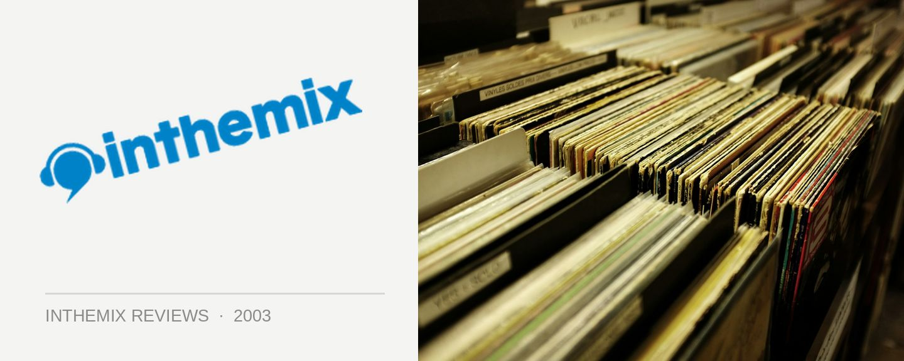

Jason Midro & DJ The Crow - Bass Sation: Global Movement
Thu 9th Oct, 2003 in Music Reviews
(The Sound of Now/Ministry of Sound)
Having been to one too many overpriced Future Entertainment parties siphoned off to long-suffering Sydney punters, my interest in hard trance faded quite significantly a few years ago. But old habits die hard, and I recently decided that it was time to revisit the sound and have a look at where the scene is now. And what better way to return to the fold than the latest Bass Station compilation? Not unlike the equivalent clubbing institution that Sydney has in Plastic, Melbourne’s Bass Station has been pumping away for years now, with the momentum provided a hardcore group of loyal attendees that pack the club out week in week out. In case you didn’t know it already, the theme of Bass Station’s general output is hard trance, and their latest double CD compilation goes by the name of Global Movement. While heroic long-time resident Jason Midro has mixed the first CD, the second is delivered by none other than DJ The Crow, a man who happens to be one half of the German super-production duo Uberdruck.
As the man also selected by the Ministry of Sound to mix the local Hard NRG compilations, Jason Midro has been well recognised for his talent behind the decks. This fact is carried across perfectly with his latest Bass Station mix, a CD that even hard-trance haters would have to admit is exceptionally well sequenced and put together. Quite a bangin’ affair for the most part, Midro’s track selection, pacing and mixing are all top notch, delivering hard trance that doesn’t take itself too seriously but drills away nonetheless. Midro opens with one of his own collaborations with Paul Grogan: Story – Never Forget, a track that opens with bangin’ breaks before building into a stomping chorus, while I’ve Got breaks out with a classic pulsing hard trance bassline. I’ve Got is a heavy-set hard trance anthem that really sets the pace, and Midro waits until the 5th track in, Orion Too’s Hope and Wait, before he delivers a really big uplifting chorus. This is followed up with even more euphoria in the form of the Jam X & Deleon mix of Jurgen Vries’s The Theme. A huge anthem that has been doing the rounds for ages, The Theme easily evokes images of huge stadium parties, complete with extravagant lighting and lasers with thousands of hands in the air.
This is merely to lull the listener into a false sense of security however, as he hardens it up again with the acid-filled Wild Pleasure from Unix, a stomper of a tune with a cheeky, killer chorus. From here the quality continues; Propaganda 303 is great hard trance, full of squiggly hardness, while DJ Virus’s All Your Bass has a relentless start that follows through to an ethereal uplifting chorus, before kicking through to even more Germanic hardness. The Rithem delivers what initially seems to be uplifting trance, before dropping down again into an evil atmospheric breakdown that follows through to pumping hard acid. All of the tracks featured on Midro’s CD are of a high quality, and it is not only the track selection that impresses. More than anything it is the pacing which makes this CD so good, and Midro pretty much manages to maintain the quality from beginning to end.
While Midro’s mix has more than a few euphoric elements, DJ The Crow’s mix is not quite so forgiving for the unprepared listener. Pretty much banging away with the hard German trance all the way through, the mix is dark, hard and pounding from beginning to end. Listeners will notice that production pieces from DJ The Crow’s infamous production group Uberdruck thoroughly dominate the CD (if they’re not instead a remix from DJ The Crow himself), which will probably give readers an idea of where the CD’s influences lie. The riffs are uncompromisingly harsh and the kick drums pound away with real crushing force, and considering that DJ The Crow himself has been responsible for shaping the sound found on the CD, he really knows his chosen style inside out.
The first track that really grabs your attention is his own mix of Drugface’s charmingly titled Cuntmaster. Utilising some very appropriate samples from the restaurant hold-up in Pulp Fiction (“any of you fucking pricks move, and I’ll execute every motherfucking last one of you!”) DJ The Crow shows beyond a doubt that he’s got the chops as a producer (if anyone ever really doubted it in the first place). The Speed and Higher Level also really stand out in the mix, transposing some screeching industrial riffage over a more traditional trance chorus. While the CD represents the epitome of the German hard-style sound, listeners who don’t have much of a taste for Uberdruck might find the throbbing basslines a little monotonous after a while.
While I hadn’t had a proper listen to hard trance for a while, Jason Midro’s mix still managed to rock my socks off, and many like me who have moved away from the sound will be surprised at how much fun the CD is. But while lovers of German hard-style will no doubt appreciate the mix from DJ The Crow, his CD doesn’t have quite the wide appeal of Jason Midro’s. At the end of the day, Midro’s mix makes me want to listen to even more bangin’ euro hardness, while DJ The Crow’s mix makes me remember why I’m not so fond of hard trance anymore. But then again, those out in clubland who worship the Uberdruck sound will no doubt be rushing out to buy the CD straight away – so to them it comes highly recommended. Either way, Global Movement has something for everyone interested in the sounds of hard trance, and it’s fantastic to see Aussie clubbing institutions continuing to live long and prosper. A big thumbs-up to the Bass Station crew.